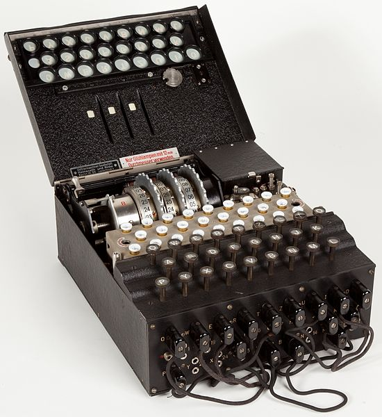
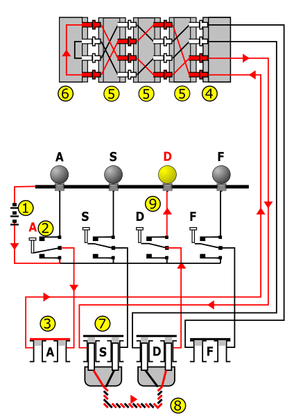

Summary
The Enigma machine is an encryption device developed and used in the early- to mid-20th century to protect commercial, diplomatic and military communication. It was employed extensively by Nazi Germany during World War II, in all branches of the German military. Enigma has an electromechanical rotor mechanism that scrambles the 26 letters of the alphabet. In typical use, one person enters text on the Enigma's keyboard and another person writes down which of 26 lights above the keyboard lights up at each key press. If plain text is entered, the lit-up letters are the encoded ciphertext. Entering ciphertext transforms it back into readable plaintext. The rotor mechanism changes the electrical connections between the keys and the lights with each keypress. The security of the system depends on Enigma machine settings that were changed daily, based on secret key lists distributed in advance, and on other settings that change for each message. The receiving station has to know and use the exact settings employed by the transmitting station to successfully decrypt a message. As used in practice, the Enigma encryption was broken from 1932 by cryptanalytic attacks from the Polish Cipher Bureau, which passed its techniques to their French and British allies in 1939. Subsequently, a dedicated decryption centre was established by the United Kingdom at Bletchley Park as part of the Ultra program for the rest of the war. While Germany introduced a series of improvements to Enigma, and these hampered decryption efforts to varying degrees, they did not ultimately prevent Britain and its allies from exploiting Enigma-encoded messages as a major source of intelligence during the war. Many commentators say the flow of communications intelligence from Ultra's decryption of Enigma, Lorenz and other ciphers shortened the war significantly and may even have altered its outcome.

Electrical pathway
The mechanical parts act by forming a varying electrical circuit. When a key is pressed, one or more rotors rotate on the spindle. On the sides of the rotors are a series of electrical contacts that, after rotation, line up with contacts on the other rotors or fixed wiring on either end of the spindle. When the rotors are properly aligned, each key on the keyboard is connected to a unique electrical pathway through the series of contacts and internal wiring. Current, typically from a battery, flows through the pressed key, into the newly configured set of circuits and back out again, ultimately lighting one display lamp, which shows the output letter. For example, when encrypting a message starting ANX..., the operator would first press the A key, and the Z lamp might light, so Z would be the first letter of the ciphertext. The operator would next press N, and then X in the same fashion, and so on. The scrambling action of Enigma's rotors is shown for two consecutive letters with the right-hand rotor moving one position between them. Current flowed from the battery (1) through a depressed bi-directional keyboard switch (2) to the plugboard (3). Next, it passed through the (unused in this instance, so shown closed) plug "A" (3) via the entry wheel (4), through the wiring of the three (Wehrmacht Enigma) or four (Kriegsmarine M4 and Abwehr variants) installed rotors (5), and entered the reflector (6). The reflector returned the current, via an entirely different path, back through the rotors (5) and entry wheel (4), proceeding through plug "S" (7) connected with a cable (8) to plug "D", and another bi-directional switch (9) to light the appropriate lamp. The repeated changes of electrical path through an Enigma scrambler implemented a polyalphabetic substitution cipher that provided Enigma's security. The diagram on the right shows how the electrical pathway changed with each key depression, which caused rotation of at least the right-hand rotor. Current passed into the set of rotors, into and back out of the reflector, and out through the rotors again. The greyed-out lines are other possible paths within each rotor; these are hard-wired from one side of each rotor to the other. The letter A encrypts differently with consecutive key presses, first to G, and then to C. This is because the right-hand rotor has stepped, sending the signal on a completely different route. Eventually other rotors step with a key press.

Rotors
The rotors (alternatively wheels or drums, Walzen in German) formed the heart of an Enigma machine. Each rotor was a disc approximately 10 cm (3.9 in) in diameter made from Ebonite or Bakelite with 26 brass, spring-loaded, electrical contact pins arranged in a circle on one face, with the other face housing 26 corresponding electrical contacts in the form of circular plates. The pins and contacts represented the alphabet — typically the 26 letters A–Z, as will be assumed for the rest of this description. When the rotors were mounted side-by-side on the spindle, the pins of one rotor rested against the plate contacts of the neighbouring rotor, forming an electrical connection. Inside the body of the rotor, 26 wires connected each pin on one side to a contact on the other in a complex pattern. Most of the rotors were identified by Roman numerals, and each issued copy of rotor I was wired identically to all others. The same was true for the special thin beta and gamma rotors used in the M4 naval variant. By itself, a rotor performs only a very simple type of encryption, a simple substitution cipher. For example, the pin corresponding to the letter E might be wired to the contact for letter T on the opposite face, and so on. Enigma's security came from using several rotors in series (usually three or four) and the regular stepping movement of the rotors, thus implementing a polyalphabetic substitution cipher. When placed in an Enigma, each rotor can be set to one of 26 possible positions. When inserted, it can be turned by hand using the grooved finger-wheel, which protrudes from the internal Enigma cover when closed. So that the operator can know the rotor's position, each had an alphabet tyre (or letter ring) attached to the outside of the rotor disc, with 26 characters (typically letters); one of these could be seen through the window, thus indicating the rotational position of the rotor. In early models, the alphabet ring was fixed to the rotor disc. A later improvement was the ability to adjust the alphabet ring relative to the rotor disc. The position of the ring was known as the Ringstellung ("ring setting"), and was a part of the initial setting prior to an operating session. In modern terms it was a part of the initialization vector. Each rotor contained one or more notches that controlled rotor stepping. In the military variants, the notches are located on the alphabet ring. The Army and Air Force Enigmas were used with several rotors, initially three. On 15 December 1938, this changed to five, from which three were chosen for a given session. Rotors were marked with Roman numerals to distinguish them: I, II, III, IV and V, all with single notches located at different points on the alphabet ring. This variation was probably intended as a security measure, but ultimately allowed the Polish Clock Method and British Banburismus attacks. The Naval version of the Wehrmacht Enigma had always been issued with more rotors than the other services: At first six, then seven, and finally eight. The additional rotors were marked VI, VII and VIII, all with different wiring, and had two notches, resulting in more frequent turnover. The four-rotor Naval Enigma (M4) machine accommodated an extra rotor in the same space as the three-rotor version. This was accomplished by replacing the original reflector with a thinner one and by adding a thin fourth rotor. That fourth rotor was one of two types, Beta or Gamma, and never stepped, but could be manually set to any of 26 positions. One of the 26 made the machine perform identically to the three-rotor machine.

Plugboard
The plugboard (Steckerbrett in German) permitted variable wiring that could be reconfigured by the operator (visible on the front panel of Figure 1; some of the patch cords can be seen in the lid). It was introduced on German Army versions in 1930, and was soon adopted by the Reichsmarine (German Navy). The plugboard contributed more cryptographic strength than an extra rotor. Enigma without a plugboard (known as unsteckered Enigma) could be solved relatively straightforwardly using hand methods; these techniques were generally defeated by the plugboard, driving Allied cryptanalysts to develop special machines to solve it. A cable placed onto the plugboard connected letters in pairs; for example, E and Q might be a steckered pair. The effect was to swap those letters before and after the main rotor scrambling unit. For example, when an operator pressed E, the signal was diverted to Q before entering the rotors. Up to 13 steckered pairs might be used at one time, although only 10 were normally used. Current flowed from the keyboard through the plugboard, and proceeded to the entry-rotor or Eintrittswalze. Each letter on the plugboard had two jacks. Inserting a plug disconnected the upper jack (from the keyboard) and the lower jack (to the entry-rotor) of that letter. The plug at the other end of the crosswired cable was inserted into another letter's jacks, thus switching the connections of the two letters.